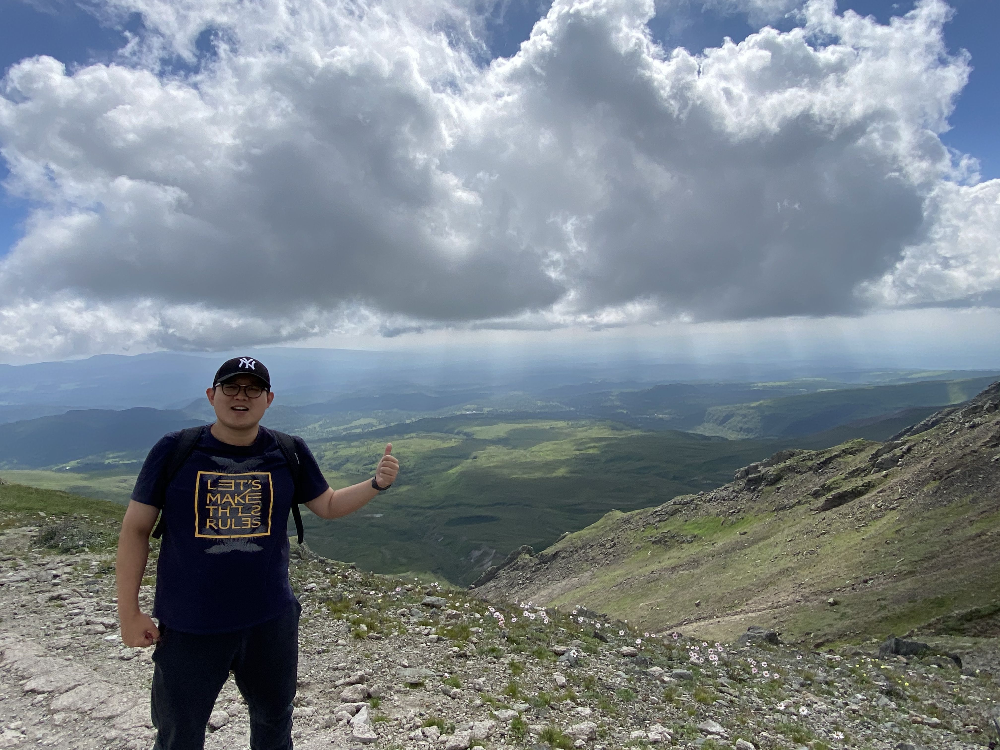
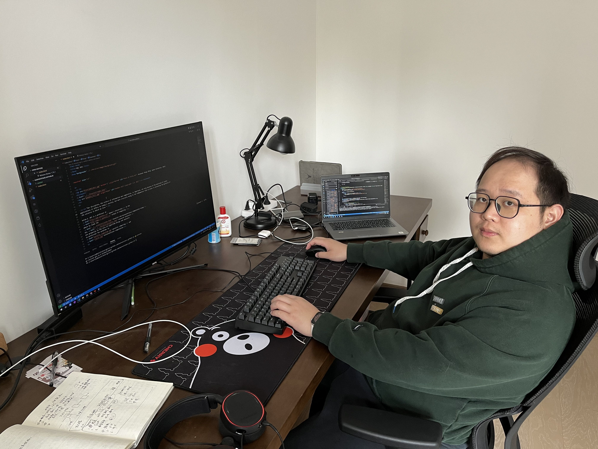

 Xiaoxuan Zhang (M.Eng. Wuhan University, 2015)
"Code or die trying."

My name is Xiaoxuan Zhang(张小轩), and I was a senior software engineer in
Mavenir in the SDAAS team,
where I leads the High-Availability development of the element control platform.
My research interests are primarily in the area of blockchain, quantitative trading platform and strategies, and high-performance software engineering with GPU(CUDA).
Now, I quit my job and went to Netherlands to obtain my second master degree in Computational Science in UvA. Meanwhile I am still working on the construction of my GPU based quantitative trading platform, GeekChomolungma.
The GeekChomolungma platform's fundamental development process involves initially constructing the database and network infrastructure using C++. Next, we establish a foundational strategy library by refining and testing strategies sourced from the open community on TradingView. Afterward, we utilize CUDA to enhance these strategies, optimizing for parallel computation across multiple assets. Finally, we simulate live trading to record profit and loss metrics.
Activities
I got my degree from Wuhan University(B.Eng. in 2013, and M.Eng. in 2015), my major was Automation Engineering.
During 2013 and 2015, I worked and studied in Shirong Zhang's group, doing optimization of Support Vector Machine(SVM) in electrical and industrial sectors.
This paper is the about my former research results, see <Optimal sparseness approach for least square support vector machine based on PSO>. In 2015, I joined the Shanghai Nuclear Engineering Research&Design Institute as an instrument engineer. Three years later, I switched careers and became a programmer. Then after 6 years later, I came back to university for my further study in High Performance Computing, where I am now.
Proficient Programming Language
C++, CUDA, Golang, Python
Skills
• Mastering Blockchain(e.g. Bitcoin and Ethereum)
• Mastering Matlab simulation
• Proficient in CUDA model and programming.
• Proficient in traditional backended development.
• Experienced with Kubernetes and Docker
• Experienced with LaTeX

Selected Github Projects
1. Lava is one of my most proud work. It is a block chain similar to bitcoin, I developed Lava based on bitcoin's P2P network protocol and a concept of a consensus named Proof of Capacity.
2. GeekChomolungma is a quantitative platform based on C++ and CUDA. It is built up to do quantitative trading in specific cryptocurrency exchanges. I am still working on it, and I want to make it a plug-in strategy platform.
3. lava-miner, the cryptocurrency miner for Lava, which is based on CPU computing instruction set. There is a related work assisted by me based on GPU calculation, which is still in private status in the Lavaio repo.
4. Uniswap-simulator, A simulator of the renowned cryptocurrency exchange -- Uniswap. I developed it after reading its whitepaper.
Resume
You can get my Resume by clicking here
Contact Information
Github: HarvestStars
Phone: (+86) 13611688224 or (+31) 616223740
Email: xiaoxuan.alex.zhang@gmail.com
Last Updated: Sep/2/2024